通过 Rockbox，让你的 M3K 焕发新生
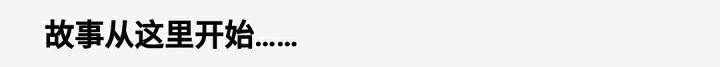
M3K 在学校被我的同学喷为智商税（泪目），官方也消极怠工，一年挤一次牙膏。闲来无事刷酷安发现 M3K 设备区全是出设备的。在所剩无几的测评中我找到 @该用户涉嫌滑稽 的开箱图文的评论区：
@该用户涉嫌滑稽 的开箱图文
本着试试又不花钱的原则，我开始了解这个从没见过的系统。
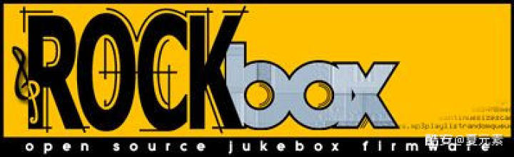
Rockbox 是一个有独立内核的开源系统，可以安装在众多数字音频播放器上，从像素级别显示屏的播放器到 iPod，Rockbox 都能轻松上任。Rockbox 不会顶掉厂商自带的系统，而是以双系统的形式在开机时选择要进入哪一个。
Rockbox 自带丰富的应用程序和游戏，不过使用体验嘛……也就那样。（我不觉得在没有触屏的播放器上用画图是个好主意。透露了什么。）有些功能可能是自带系统（oem)没有的。
以我们这次的主角：M3K 为例，Rockbox 比 Fiio 的系统多了观看视频和正常的显示歌词的能力（和更多）。不过像 MPEGplayer 之类的插件包含在系统中，选择一个视频文件打开就能播放，但是在应用列表中是找不到的。
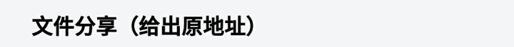
但是官方并没有该设备的官方稳定包，于是我在官方论坛寻找，终于找到大佬制作的包（见参考资料2）。
可以在作者的首页下载（貌似作者是个俄罗斯人）：
查看链接
我已经下载好了，但是我不确定包有没有问题（虽然我能正常使用），建议还是自己下载。我的分享：
查看链接
密码:79kv
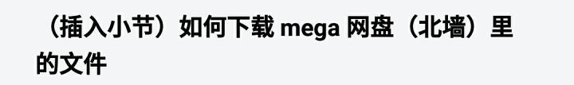
Mega 网盘在国内是北墙的，这里简要讲一下我实践探索出的方法：
1.先飞进入文件分享的下载页面，然后停机，下载的 IP 地址会变回自己的（因为 mega 限制 IP 的下载流量，公共飞机的流量一般是用完的），再点击下载就好，到最后解密的时候再坐飞机才能正常解密。要使用一些正常的浏览器（不要 flyme 自带的）。
2.下 mega 的客户端（应用汇有），设置里面勾选不使用http（我感觉说反了，应该是翻译错误），然后飞机连接网页，将文件保存到自己盘里，然后停机，在客户端里下载。
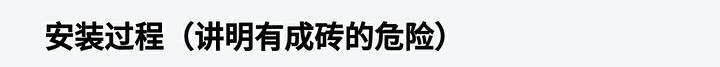
警告：只要你想刷机，就要做好可能成砖的准备！也建议备好一个官方的固件，以防不测。可以按照参考资料4的官方教程操作，出现问题里面也有部分解决方法。这里简要介绍步骤。
将下载下来的压缩包打开，连接电脑或者手机，将压缩包里面的 M3K.fw 文件拷贝到你插入 M3K 的 SD卡中（SD卡最好是 FAT32 格式）。关机后，将此卡插入M3K卡槽中，同时按住音量“+”和“电源/锁屏”键，直到弹出TF卡升级对话框再松开手，升级进度条完成后会自动重启播放器。
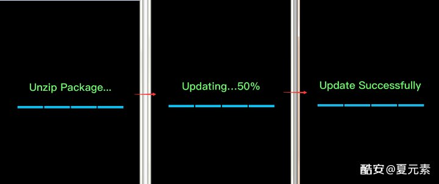
大致的更新过程
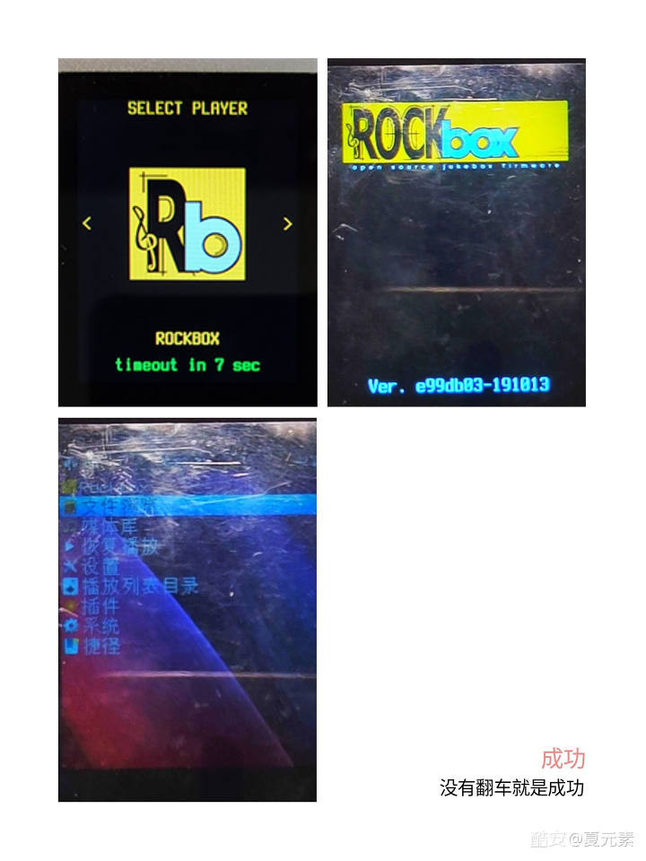
更新完成后的画面，也是之后每次开机会经过的画面
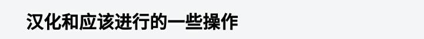
建议先更换字体（在设置-主题设置里）为18号的 Fixed 再更换语言，如果出现了大方块，找一下一个A的图标，那就是更换语言。初用会发现快进快退不了，其实要去设置里设置快进快退的跳转步长值，对我来说5就够了。
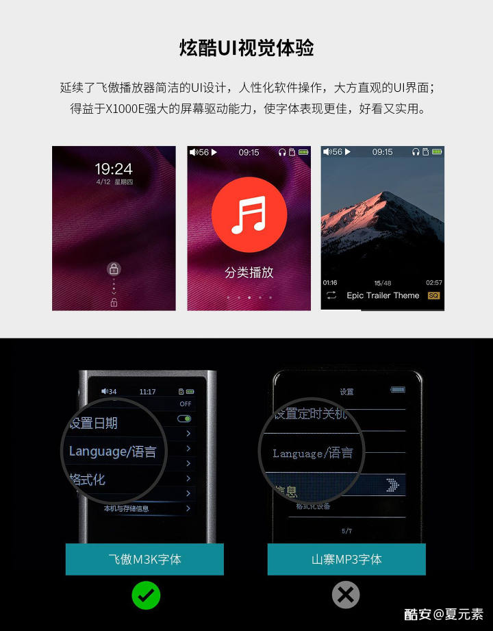
获得山寨MP3字体体验【滑稽】
如果没有上述菜单，可能需要你在应用程序里找到 settings_dumper（似乎我也是点了这个才找到字体更换的），但是使用后主题会崩，需要自己调整，所以可以斟酌一下，不影响使用的话英语也无妨。
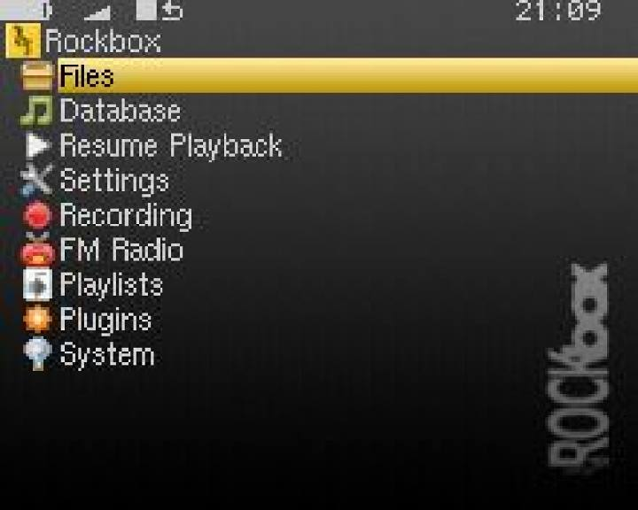
主题崩掉就变成了最原版的默认皮肤，并且状态栏会有点不正常。图为默认主题示例。
如果显示文本乱码，就在设置里调一下文字编码，基本上 GB 和万国码调一下就好。
暂时先讲到这里，到这里基本上就没有什么问题了，大家就自己体验摸索吧。关机需要长按电源键，闪屏两次（看按键灯也行）后才算成功关机。如果你有兴趣，可以帮助翻译 Rockbox：
查看链接
更多资料在官网和它的维基搜索：
查看链接
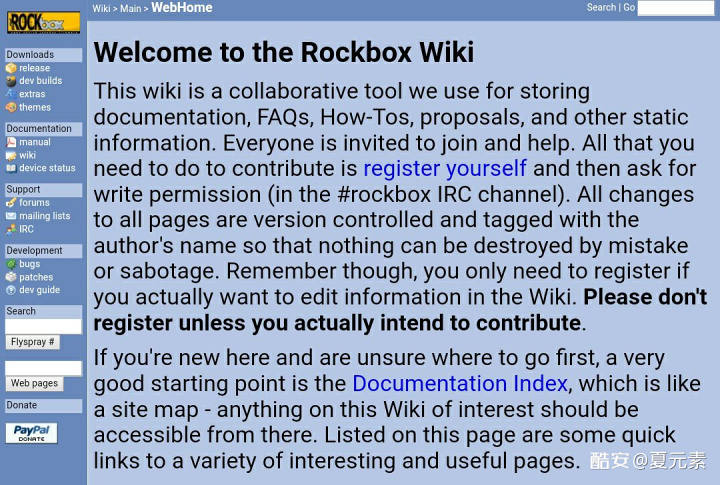
Rockbox Wiki 首页
这篇图文也写了好几天了，中间还经历了开学月考，不过总算是没有烂尾。毕竟我也上高三了，如果还有时间我就摸索一下，没有时间可能大学才会再更新了。主题和插件其实我也不是很懂，希望有大佬补充。最后求酷安老哥。
维基百科：Rockbox
查看链接
Rockbox 论坛：M3K
查看链接
Rockbox 插件中心：MPG 视频播放器
查看链接
飞傲官网：如何升级 M3K
查看链接
飞傲：M3K
查看链接